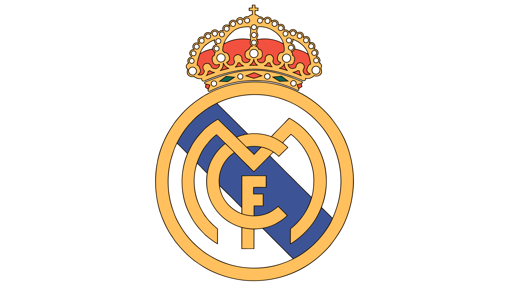

Fotbalul, așa cum îl cunoaștem astăzi, are origini istorice îndelungate, iar dezvoltarea sa a fost influențată de mai multe culturi și civilizații de-a lungul timpului.
Originea exactă a sportului este încă subiect de dezbatere și cercetare, dar iată câteva puncte cheie despre istoria sa:
- Originile antice: Forme primitive ale jocurilor cu mingea, asemănătoare fotbalului, au fost practicate în civilizații antice precum China, Grecia, Egiptul și Roma. Aceste jocuri aveau reguli variate și implicau lovirea unei mingi pentru a marca un gol.
- Evoluția în Regatul Unit: Fotbalul modern, așa cum este cunoscut astăzi, a evoluat în Marea Britanie în secolele al XIX-lea și al XX-lea . Aici s-au conturat reguli clare și a avut loc o standardizare a jocului. A fost fondată Football Association (FA) din Anglia în 1863, care a creat primele reguli oficiale ale fotbalului.
- Expansiune internațională: Fotbalul a devenit rapid popular în întreaga lume, cu primele meciuri internaționale organizate în secolul al XIX-lea. Prima Cupă Mondială a avut loc în 1930 în Uruguay, consolidând statutul fotbalului ca sport global.
- Amploare contemporană: Fotbalul a continuat să crească în popularitate și a devenit un fenomen global în secolul XXI. Cu Campionatele Europene și Campionatele Mondiale, precum și competițiile de cluburi precum Liga Campionilor UEFA și Premier League, fotbalul atrage milioane de fani și este un domeniu major în industria sportului.
